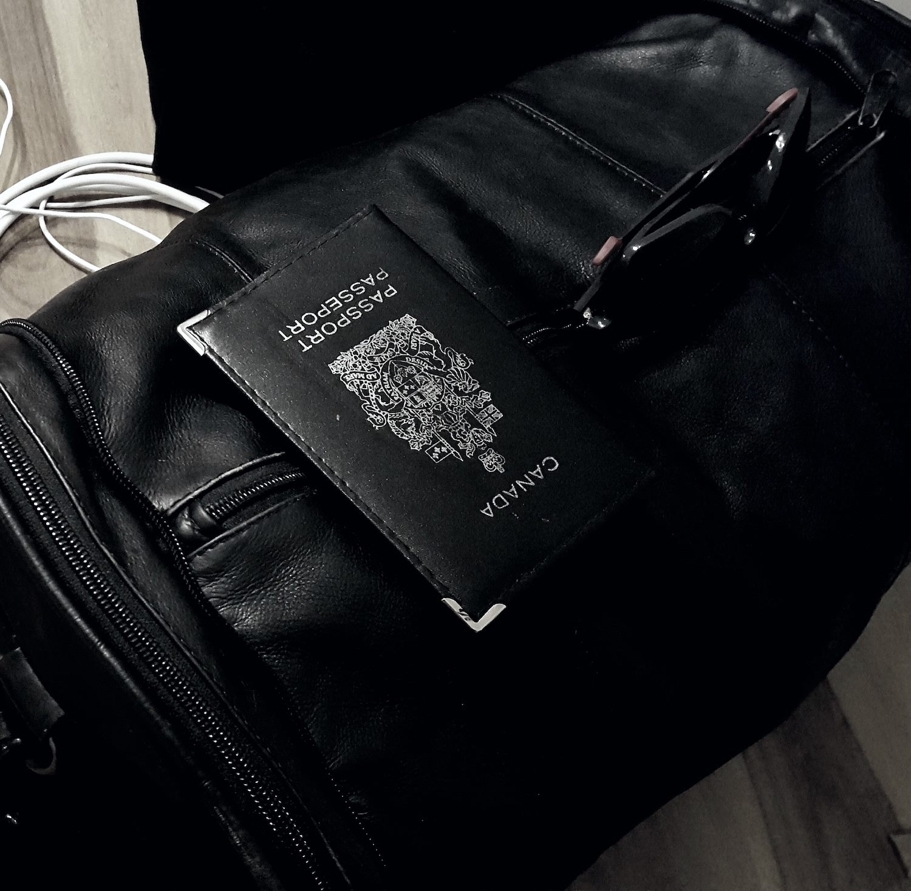

BBQ
August 6 2018

Gozu's singer invited us at his place near Hudson for a BBQ. The man knows how to grill. The show yesterday was at Ralph's Diner in Worcester and we are already heading to Providence for our last show with GOZU before leaving for Georgia. We had some time to kill this afternoon so we went to the beach. We grilled chicken on a public charcoal there. Smooth.
Trash
August 5 2018

Here is a wild Darcy, also knowned as a Goglu, in his natural habitat.
GOZU
August 5 2018
We played our first show tonight, it was great. Jon from Geno's Rock Clubs was welcoming and helped us organize the rig. Even if The Sword and The Descendents were playing the same night in Portland, we ended up having a nice crowd. However, I honestly think GOZU stole the show, those guys rocks as hell. They invited us to park Berta at their place tonight, we ended up partying with them. I got bullied by a butterfly on steroids near the fire pit.
First Night
August 4 2018
We crossed the border without any problems, surprisingly. Officers at the Jackman border were really friendly. We tried to fuel up the RV in Jackman, but we slightly bumped in the garage with our vehicle. The lady shut down the light right away, so we ran out of gas before reaching Portland. We ended up in a bar in The Forks and slept in a parking lot. The RV is like a high-end hotel on wheels, it is a wonderful machine. Darcy is driving us to Portland, we should be there at 11 A.M. Our first show is scheduled for tonight at Geno's Rock Club.
The Departure
August 3 2018
Things are now real. WhiteNails is on tour. We left a few minutes ago with Berta, our magnificent 1990 Ford RV. We are heading toward Portland, Maine. We’ll reach the border in a few hours, can’t wait to see how this it gonna go. I’m not stressed, we look like a typical family in a RV after all.
Ready to go
August 1 2018
Bags are packed, everything is ready. We downloaded a ton of music and movies for the road. We are leaving home tomorrow.
8,684 Miles
July 29 2018

Once all the dates settled, we plotted all the venues on the map. Here's then plan: 8,684 miles across 24 cities spread through North America. We'll have to cross the borders 4 times. With an average 5 hours drive each day, we are truly gonna live on the road for a whole month.
One Hell Of A Tour
July 26 2018

Here's the official poster of the tour with Black Tusk and WHORES. We accepted gigs with GOZU on our way to Atlanta as well, so the few first gigs will happen in New England.
Packing Up
July 25 2018
Who knew how much details needed to be aligned before leaving. In addition to getting valid visas, we had to find a vehicle, a trailer, and fill up the merch. We printed new designs, pins, stickers, and got new vinyls. Each of us had to get their passports up to date, and deal with our jobs to get time off.
The Beginnings
July 24 2018
About 2 and a half month ago, a crazy opportunity just popped in our mailbox. Touring with Black Tusk and WHORES for a full month. Ready or not, we decided to jump in and accepted right away. Here's the full story behind the 2018 summer tour.